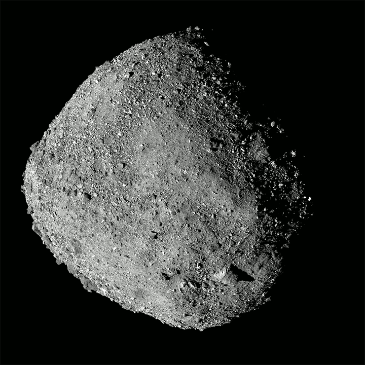
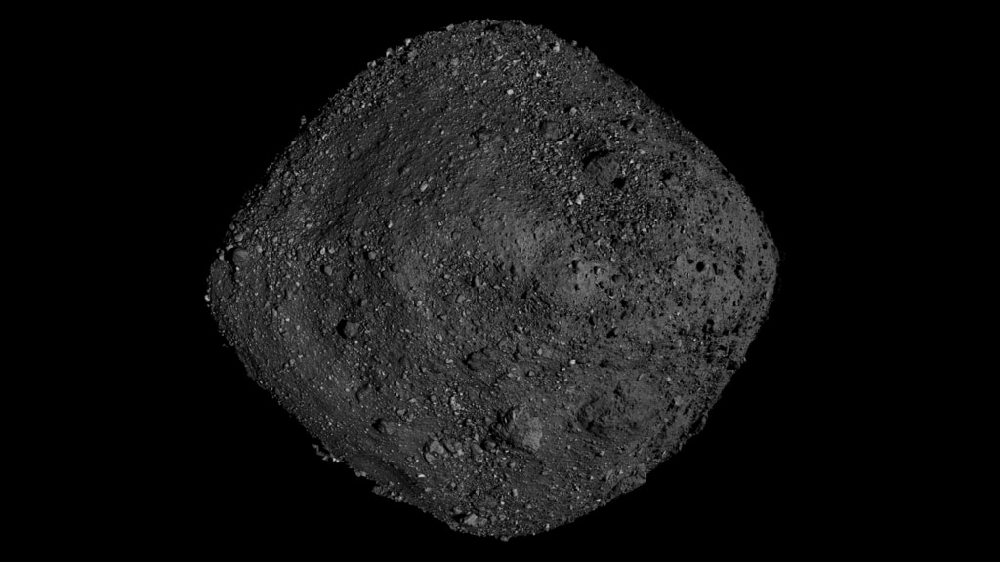
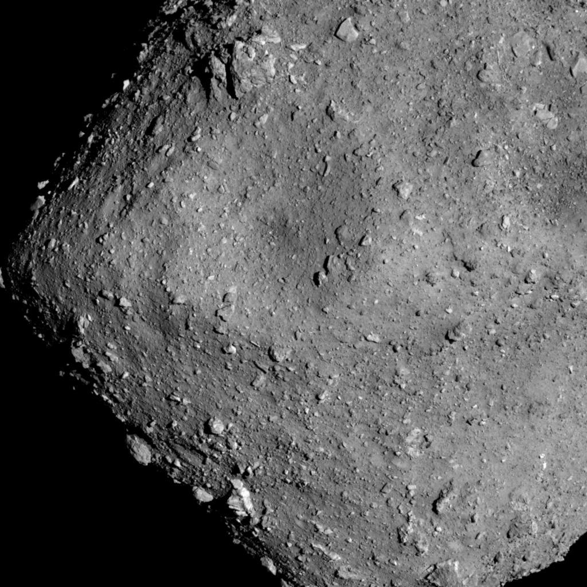
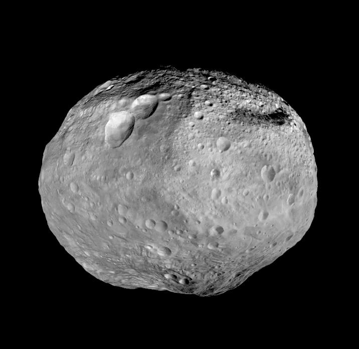
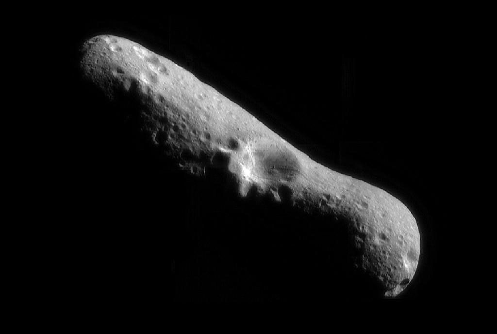

A first-person surface experience built around real asteroid scale, gravity and mission imagery. No atmosphere. No blue sky. No soft sunlight.
Desktop: WASD + mouse. Mobile: left joystick + drag to look. Headphones optional. Space is silent.
Bennu is tiny enough that the horizon at standing eye height is only about 29 metres away. This build now curves the local surface around the asteroid instead of using a flat game plane.
Lighting is vacuum-style: one hard Sun, almost no ambient fill, black sky, sharp boulder shadows and no atmospheric haze. Surface colour is intentionally muted because Bennu is extremely dark.
Bennu uses real NASA OSIRIS-REx Nightingale terrain. In HD mode, the 4.29-million-triangle mission mesh provides the actual boulders, slopes and surface relief. Balanced mode uses a lighter heightfield with procedural filler stones. Bennu orbit mode loads a lightweight version of NASA’s global OSIRIS-REx shape model with mission albedo imagery. Eros and Kleopatra currently use scale-matched shape approximations. The high-detail Nightingale mesh remains the local landing site.
Bennu landing zone: Nightingale. Source geometry: NASA SVS / OSIRIS-REx. The giant Jupiter vista is a cinematic visual layer inspired by NASA/JPL imagery, not Bennu's real sky. Low-gravity push-off time is compressed so a hop does not take several real minutes. Visual scale and 1.72 m eye height remain human-scale.
Mission photographs and a NASA surface-model view. These are scientific references for the worlds in Asteroid Walk.

BENNUOSIRIS-REx · NASA 3D surface model
RYUGUHayabusa2 · JAXA, from ~6 km
VESTADawn · NASA/JPL global mosaic
EROSNEAR Shoemaker · NASA/JPL orbital mosaicEach image links to its mission or archive source. Bennu’s image is a NASA rendering from mission data; the others are spacecraft photographs or mosaics.
Your push exceeded local escape speed.